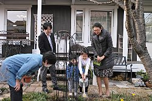
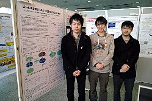
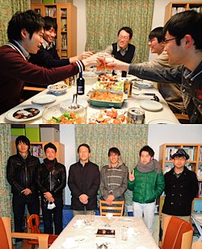
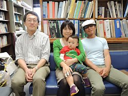
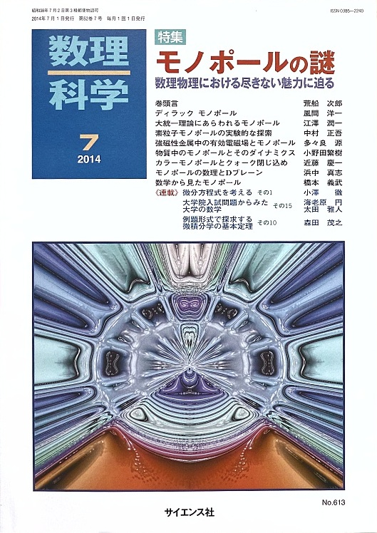
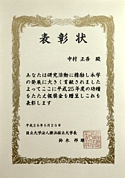
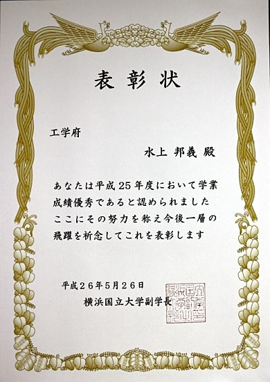
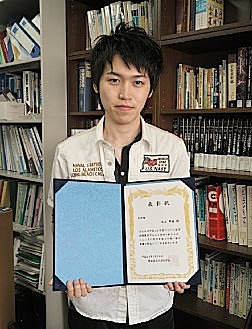

Update : 2 Jul. 2015
Update : 2 Jul. 2015中村研ニュース（2014年度）
修士生２名と学部生３名が修了・卒業［2015年3月］
3月25日（水）に修了式・卒業式が行なわれ，中村研も修士生２名と学部生３名が無事に修了・卒業して学位が授与されました。 修了・卒業したメンバーは次の通りで，４年生は留学中の１名を除き全員が進学し，そのうち２人は中村研に残りました。- 修士修了
- 濱西 亮，水上 邦義
- 学部卒業
- 木村 光太郎，藤野 琢郎，山下 徹
M2の水上と中村が日本物理学会年次大会で登壇［2015年3月］
3月21日（土）から24日（火）まで，日本物理学会第70回年次大会が早稲田大学早稲田キャンパスで開催され，21日に中村研の博士課程前期２年の水上が，24日に中村がそれぞれ登壇しました。 講演のタイトルは，水上が「LiteBIRDのための宇宙前景放射除去法の検証」で，高エネルギー加速器研究機構他と共同で進めている宇宙マイクロ波背景放射のＢモード偏光観測計画LiteBIRDのためのシミュレーション研究について発表しました。また，24日（火）には中村が登壇し，「液体キセノンの赤外発光の測定-2」というタイトルで講演しました。共同研究者の平賀（佐藤）純子氏ご一家が中村宅に来訪［2015年3月］
3月22日（日）に，中村と中村研の学生が共同研究でたいへんにお世話になった平賀（佐藤）純子氏が，ご主人とお２人のお子さんとともに中村宅に来訪されました。平賀氏は本年４月より新たに関西学院大学に移られ，またご主人の佐藤悟朗氏も新たなお立場で引き続きJAXAで研究を続けられます。若いお２人のいっそうのご活躍を心からお祈りしております。中村が神岡鉱山でXMASS実験のシフトに参加［2015年3月］
3月3日（火）から7日（土）まで，中村が，神岡鉱山で進められている暗黒物質探索実験XMASSのシフトを行ないました。OBの高木雄太氏が来訪［2015年3月］
3月20日（金）に，中村研OBの高木雄太氏（現・旭化成エレクトロニクス）が会社説明会のために来訪しました。学部４年の３人の学部生が卒論発表会で発表［2015年2月］
2月23日（月）に工学部知能物理工学科・理工学部物理工学EPの卒論発表会が開かれ，中村研の３人の学部４年生が発表を行ないました。発表のタイトルは次の通りです。
◎木村 光太郎：「液体キセノン検出器の集光効率向上のためのGeant4シミュレーション」◎藤野 琢郎：「POLARBEAR実験におけるTESボロメータのゲインの較正手法の研究」
◎山下 徹：「宇宙マイクロ波背景放射Bモード偏光観測衛星計画LiteBIRDに向けた前景放射除去法の研究」
M2の２人の院生が修論発表会で発表［2015年2月］
2月16日（月）〜18日（水）に工学府物理情報工学専攻物理工学コースの修論・ポートフォリオ発表会が開かれ，17日（火）に中村研の博士課程前期２年の２人の院生が発表を行ないました。発表のタイトルは次の通りです。
◎濱西 亮：「液体キセノンTPCを用いた小動物用PETのGATE/Geant4によるシミュレーション」◎水上 邦義：「銀河系宇宙塵による宇宙背景放射Bモード偏光検出への影響の研究」
次年度の新卒研生として５人が仮配属［2015年1月］
1月21日（水）に，中村研の平成27年度の新卒研生として５人が仮配属されました。宇宙科学シンポジウムでＭ2の水上が発表［2015年1月］
1月6日（火），7日（水）に宇宙航空研究開発機構で第15回宇宙科学シンポジウムが開かれ，両日に博士課程前期２年の水上が，宇宙のインフレーションモデルの検証を目指す共同研究，宇宙マイクロ波背景放射のＢモード偏光観測衛星計画LiteBIRDのポスター発表をしました。水上の発表のタイトルは，「LiteBIRDに向けた前景放射除去法の検討」でした。中村宅で中村研の忘年会［2014年12月］
12月26日（金）に，中村宅で中村研の忘年会を開きました。今年は皆が忙しかったため，現役の限られた面々で，こじんまりと行いました。Ｍ2の濱西が仏国ナントのSubatechで研究［2014年12月］
M2の濱西が，前年に引き続き，11月26日から12月21日までフランスのナントにあるSubatechに出張し研究をしました。研究課題は，小動物用の液体キセノンPET，XEMIS2に関するシミュレーションでした。大学院工学府博士課程（前期）の一般選抜で１名合格［2014年12月］
平成27年度横浜国立大学大学院工学府博士課程（前期）の一般選抜において，本研究室を志望する受験生が１名合格しました。中村がYNUサイエンスカフェの司会を担当［2014年12月］
12月16日（火）に第45回YNUサイエンスカフェ「錯確率思考 〜直感が裏切られる〜」が本学の教育文化ホールにて開催され，中村が主担当のコーディネータとして司会をしました。中村が東京大学宇宙線研究所 共同利用研究成果発表会で講演［2014年12月］
12月12日（金），13日（土）に，東京大学宇宙線研究所の共同利用研究成果発表研究会が東京大学宇宙線研究所（柏キャンパス）で開催され，中村も発表を依頼されて13日（土）の午前に講演を行ないました。講演のタイトルは「液体キセノンシンチレータの近紫外発光の研究」で，今年度から派生的な課題として開始した研究の現状を手短に報告しました。中村が神岡鉱山でXMASS実験のシフトに参加［2014年12月］
12月2日（火）から7日（日）まで，中村が，神岡鉱山で進められている暗黒物質探索実験XMASSのシフトを行ないました。M2の水上とM1の入江が放射線医学総合研究所のHIMACでビーム試験［2014年11月］
11月17日（月）22:00から18日（火）6:00にかけて，博士課程前期２年の水上と同１年の入江が，千葉県穴川の放射線医学総合研究所のHIMACにおいて行われた，宇宙マイクロ波の偏光観測衛星計画のための各種材料の陽子暴露試験に参加しました。大学院工学府博士課程（前期）の特別選抜で１名合格［2014年11月］
平成27年度横浜国立大学大学院工学府博士課程（前期）の特別選抜において，本研究室を志望する受験生が１名合格しました。中村がYNUサイエンスカフェを担当［2014年11月］
11月13日（木）に第44回YNUサイエンスカフェ「ヒトメカニズム×ロボット 〜ヒト情報処理メカニズムに基づく医療福祉〜」が本学の教育文化ホールにて開催され，中村もコーディネータとして担当しました。中村がYNUサイエンスカフェを担当［2014年10月］
10月28日（火）に第43回YNUサイエンスカフェ「未来の自動車は何で動く？？ 〜燃料電池車は普及するか〜」が本学の教育文化ホールにて開催され，中村もコーディネータとして担当しました。中村研OB・OGの大田真一郎氏と梅津（大田）里香子氏が来訪［2014年10月］
10月25日（土）のホームカミングデーに，中村研のOBとOGである大田真一郎氏と梅津（大田）里香子氏ご夫妻が，お子さんとともに中村研に来訪されました。お２人は鳥取の方にお住まいで仕事が大変なようですが，健康に気をつけて今後ともご活躍下さい。LiteBIRDのミッション部検討会に参加［2014年10月］
10月3日（金）に宇宙航空研究開発機構でLiteBIRDミッション部検討会が開かれ，中村と関係する学生が参加しました。中村がYNUサイエンスカフェを担当［2014年9月］
9月29日（月）に第42回YNUサイエンスカフェ「ビッグデータが見せる世界 〜簡単なセンサで電気自動車での日常を予測してみよう〜」が本学の教育文化ホールにて開催され，中村もコーディネータとして担当しました。修士生１名が修了［2014年9月］
9月25日（木）に９月修了生の修了式が行なわれ，中村研の岩崎裕也が無事に修了し学位が授与されました。なお，岩崎は修了生を代表して答辞を述べました。M2の水上と濱西が日本物理学会秋季大会で登壇［2014年9月］
9月18日（木）から21日（日）まで，日本物理学会2014年秋季大会が佐賀大学本庄キャンパスで開催され，中村研の博士課程前期２年の水上と濱西が，18日と21日にそれぞれ登壇しました。講演のタイトルは，水上が「LiteBIRDのための偏光マップ作成ソフトウェアの開発」で，高エネルギー加速器研究機構他と共同で進めている宇宙マイクロ波背景放射のＢモード偏光観測計画LiteBIRDのためのシミュレーション研究について発表し，濱西は「液体キセノンTPCを用いた小動物用PETのGATE/Geant4によるシミュレーション研究」で，高エネルギー加速器研究機構他と共同で進めている小型PETのシミュレーションについて発表しました。
中村がKEKサマーチャレンジ2014の演習P02の前半を担当［2014年8月］
第８回となる夏のKEKサマーチャレンジが8月19日（火）から27日（水）までKEKで行われ，中村が演習テーマの１つ，「最新のシンチレーション検出器を究めよう〜光る結晶と光る液体キセノン〜」をKEKのスタッフの協力の下に前半だけ担当しました。中村研の院生がTAとして活躍してくれたお陰で，今年も本演習P02の参加者６人の皆さんは毎日充実した有意義な９日間を過ごせたと思います。なお，他の演習テーマですが横浜国大からの参加者も３名ありました。来年もサマーチャレンジは開催されると思いますので，２年生の皆さんは来年に奮ってご応募下さい！中村が神岡鉱山でXMASS実験のシフトに参加［2014年8月］
5月に続き，8月2日（土）から5日（火）まで，中村が，神岡鉱山で進められている暗黒物質探索実験XMASSのシフトを行ないました。大阪大学の猿倉信彦先生が来訪［2014年7月］
7月29日（火）に，大阪大学の猿倉信彦先生がキセノンのシンチレーションに関する打ち合わせのために来訪されました。更新を再開［2014年7月］
昨年末から余りにも忙しく，Webの更新がストップしていましたが，ようやく峠を越えつつあるので，少しずつ更新を再開します。 つきましては，この間のニュースを過去に遡って徐々に追加して掲載しますので，時折ご確認下さい。雑誌『数理科学』7月号に中村が執筆［2014年6月］
中村が昨年末に依頼された， 磁気単極子（モノポール）の実験的な探索に関する稿が，雑誌『数理科学』7月号の特集「モノポールの謎」（6月20日発売）の20〜25頁に掲載されました。 対象は学部生および一般向けとしてとして書きましたので簡単な内容ですが，ご興味ある方はお読み頂ければ幸いです。＞＞＞ 『数理科学』のサイト
中村がYNU研究貢献賞を受賞［2014年6月］
6月25日に，中村が横浜国立大学のYNU研究貢献賞（外部資金獲得研究者表彰）を受賞し， 工学研究院長から表彰状と目録を授与されました。 この賞は、前年度に研究代表者として獲得した外部資金（科研費・受託研究費・共同研究費）の獲得実績と，さらにその中から，今後も優れた研究成果をあげることが 期待できると認められる者に対して授与されるものとのことですので，この賞に恥じぬように今後も研究を進めていきたいと思います。（全学Webサイトのニュースはこちら）→公開は終了したようです
【祝】博士課程前期２年の水上が成績優秀者の表彰［2014年5月］
 博士課程前期２年の水上邦義が，5月26日（月）付けで，平成25年度工学府博士課程前期１年のコース内の成績優秀者として副学長から表彰を受けました。中村研の近況について［2014年5月］
中村研では，2013年度から新たに科研費を頂いて，高エネルギー研他の協力を得て，共同で液体キセノンの赤外発光の測定を本格的に開始している他，中村は神岡のXMASS実験を続けています。 また，一部の学生は，GPGPUを利用した高速なシミュレーション計算により宇宙マイクロ波背景放射に関する研究も行なっています。 極めて多忙な日々が続いていますが，中村研では目先の利益には惑わされず，専門分野である夢多き宇宙素粒子物理学の本質である パイオニア精神を大事にして，本質的な貢献を続けていきたいと思います。引き続き，よろしくお願いします。中村がKEKサマーチャレンジ2014の演習を担当予定［2014年5月］
第８回となる夏のKEKサマーチャレンジが，今年も，8月19日（火）〜27日（水）にKEKで行われます。 中村も液体キセノンに関する演習テーマを受け持ち，KEKのスタッフと一緒に担当します。 また，中村研の院生もTAとして活躍する見込みです。中村が神岡鉱山でXMASS実験のシフトに参加［2014年5月］
5月5日（月，祝）〜7日（水）に，中村が，神岡鉱山で進められている暗黒物質探索実験XMASSのシフトを行ないました。２名が大学院に進学し，４名が卒研配属しました［2014年4月］
2014年度がスタートし，進学した新Ｍ１の２人と新４年生４人が研究室に配属されました。- 入江 郁也（M1）
- 小野 隼人（M1）
- 木村 光太郎（B4）
- 日野 陽太（B4）
- 藤野 琢郎（B4）
- 山下 徹（B4）